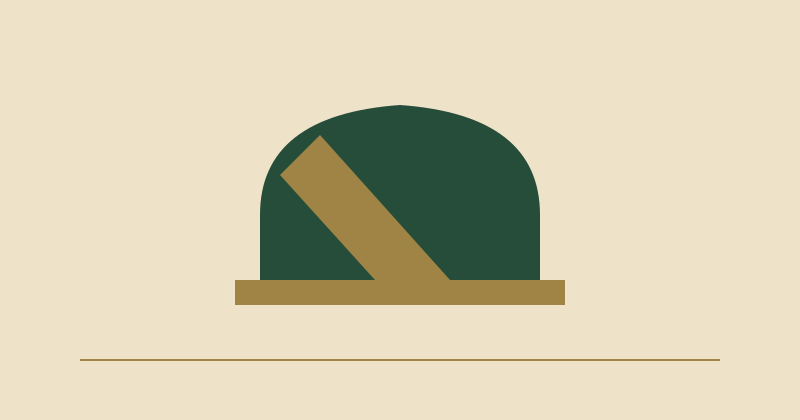

Cómo leer el reloj sin inventar un resultado
Editorial educativo — no es una crónica de resultados
Texto original de la redacción automática · Publicado: 2026-10-13T06:19:52.257494+00:00

Las horas se muestran con referencia UTC para facilitar la comparación entre lectores. Una nota conserva el horario anunciado en la captura original; no se transforma automáticamente en crónica cuando ese horario pasa. Una actualización fiable requeriría nueva evidencia. Si abre una previa antigua, lea primero la fecha de observación: esa es la frontera entre el dato que conocemos y lo que no sabemos.